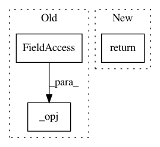

3c8a136231a8eb883a6147c3b65c4ed37e28f625,mvpa2/datasets/sources/openfmri.py,OpenFMRIDataset,get_bold_run_image,#OpenFMRIDataset#,160
Before Change
else:
flavor = "_" + flavor
fname = "bold%s.nii.gz" % flavor
fname = _opj(self._basedir, _sub2id(subj),
"BOLD", _taskrun(task, run),
fname)
return nb.load(fname)
def get_bold_run_dataset(self, subj, task, run, flavor=None, add_sa=None,
**kwargs):
After Change
else:
flavor = "_" + flavor
fname = "bold%s.nii.gz" % flavor
return self._load_bold_task_run_data(subj, task, run, [fname], nb.load)
def get_bold_run_dataset(self, subj, task, run, flavor=None, add_sa=None,
**kwargs):
Returns a dataset instance for the BOLD data of a particular
In pattern: SUPERPATTERN
Frequency: 3
Non-data size: 3
Instances
Project Name: PyMVPA/PyMVPA
Commit Name: 3c8a136231a8eb883a6147c3b65c4ed37e28f625
Time: 2014-11-20
Author: michael.hanke@gmail.com
File Name: mvpa2/datasets/sources/openfmri.py
Class Name: OpenFMRIDataset
Method Name: get_bold_run_image
Project Name: PyMVPA/PyMVPA
Commit Name: 32c7b798be930eb48ed052bd3254cbe4310b87f6
Time: 2014-10-30
Author: michael.hanke@gmail.com
File Name: mvpa2/datasets/sources/openfmri.py
Class Name: OpenFMRIDataset
Method Name: get_subj_ids
Project Name: PyMVPA/PyMVPA
Commit Name: 4330f71451565d329e73304df45dacb9470261e4
Time: 2014-11-24
Author: michael.hanke@gmail.com
File Name: mvpa2/datasets/sources/openfmri.py
Class Name: OpenFMRIDataset
Method Name: get_anatomy_image